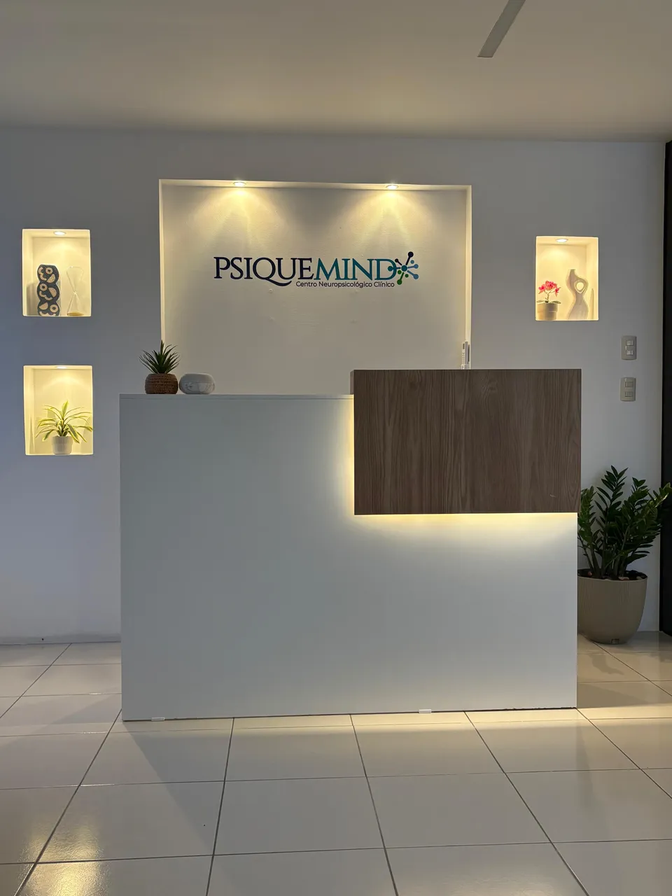
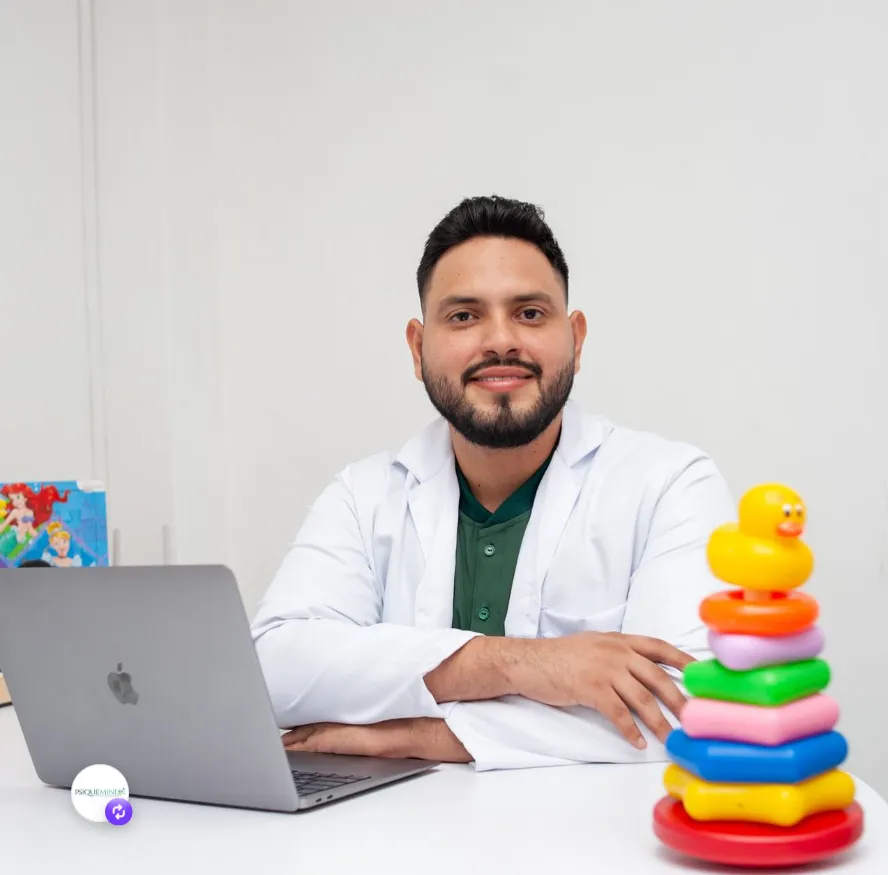
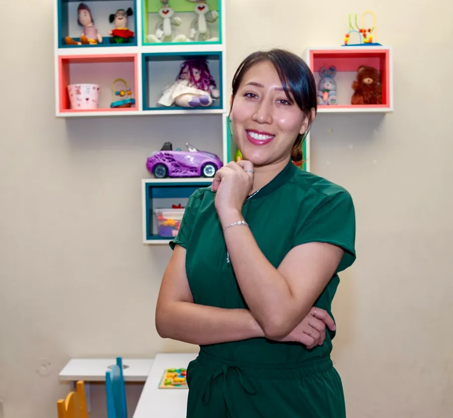
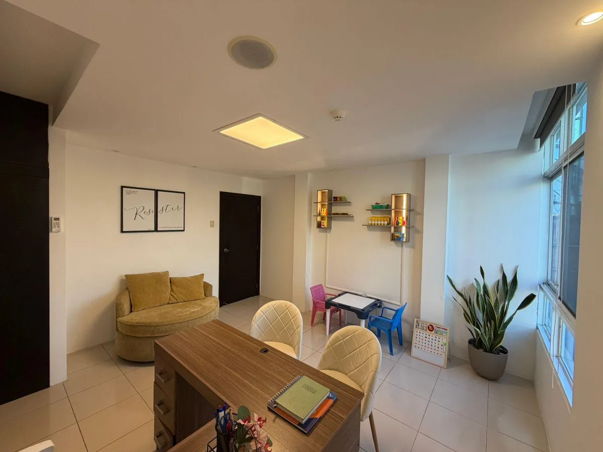
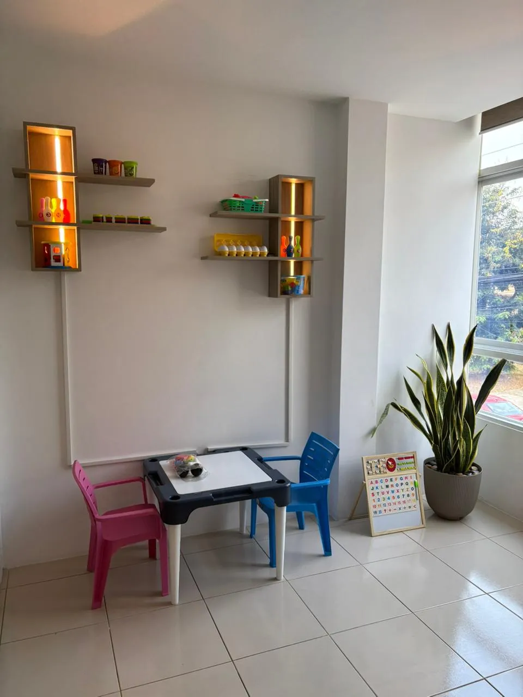
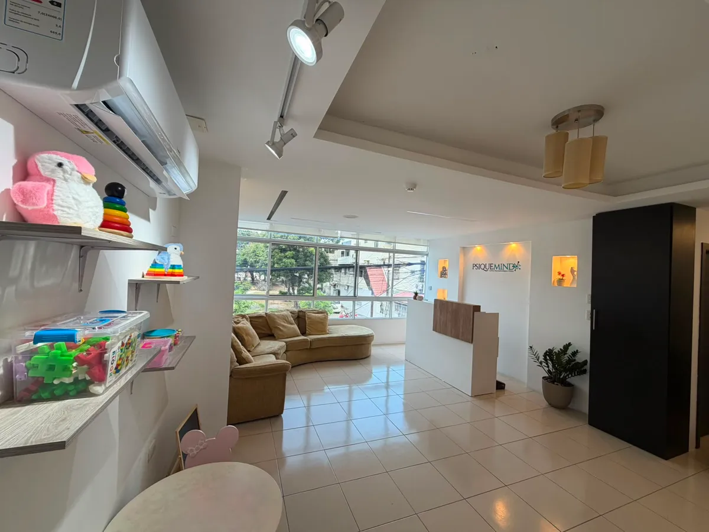

Evaluación Neuropsicológica
Un estudio integral del desarrollo, la atención, la memoria y el aprendizaje para entender cómo funciona el cerebro de tu hijo.
Acompañamos a las familias a comprender el desarrollo de sus hijos mediante una evaluación profesional basada en evidencia científica. Sin etiquetas apresuradas. Con calma y claridad.
Atención personalizada · Lunes a viernes de 08:00 a 18:00

Observar una conducta diferente en tu hijo no siempre significa Autismo o TDAH.
Muchas familias llegan con miedo, dudas y demasiada información contradictoria. El primer paso no es diagnosticar: es comprender qué está ocurriendo, con tiempo y con respaldo profesional.
Un estudio integral del desarrollo, la atención, la memoria y el aprendizaje para entender cómo funciona el cerebro de tu hijo.
Está orientada a mejorar las habilidades sociales y emocionales de tu hijo, fomentando el desarrollo de estrategias efectivas para manejar situaciones cotidianas.
Está orientada a mejorar las habilidades de comunicación de tu hijo, fomentando el desarrollo de estrategias efectivas para expresarse y comprender el lenguaje.
Distinguimos con precisión entre condiciones del neurodesarrollo y otras causas, evitando conclusiones apresuradas.
Un plan personalizado y orientación clara para la familia en cada etapa del proceso, con empatía y sin tecnicismos.
Rigor científico y calidez humana: comprender la historia de cada niño antes de emitir un diagnóstico.





Nos escribes por WhatsApp y conversamos sobre tu preocupación.
Realizamos un estudio integral y personalizado del desarrollo.
Explicamos los resultados con claridad, sin tecnicismos.
Diseñamos un plan a la medida de tu hijo y tu familia.
Escríbenos por WhatsApp y demos juntos el primer paso para comprender la historia de tu hijo.
Solicitar información por WhatsApp